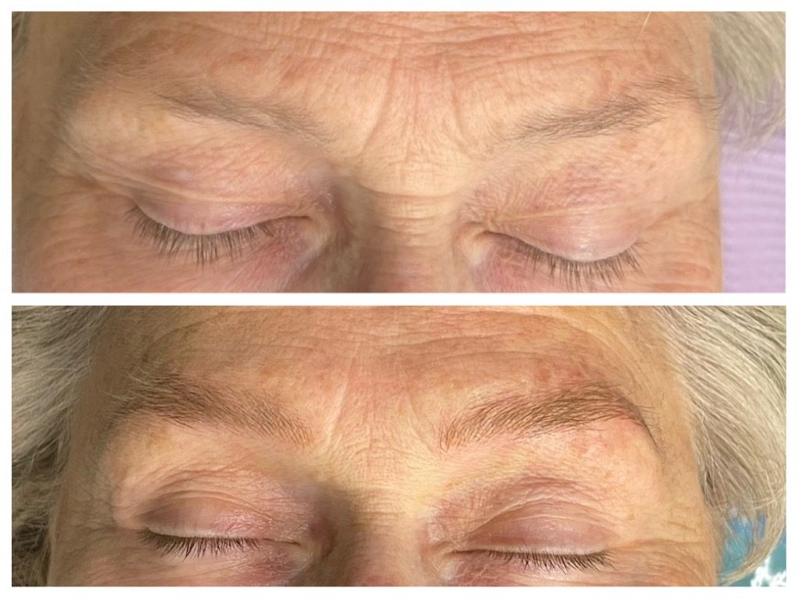
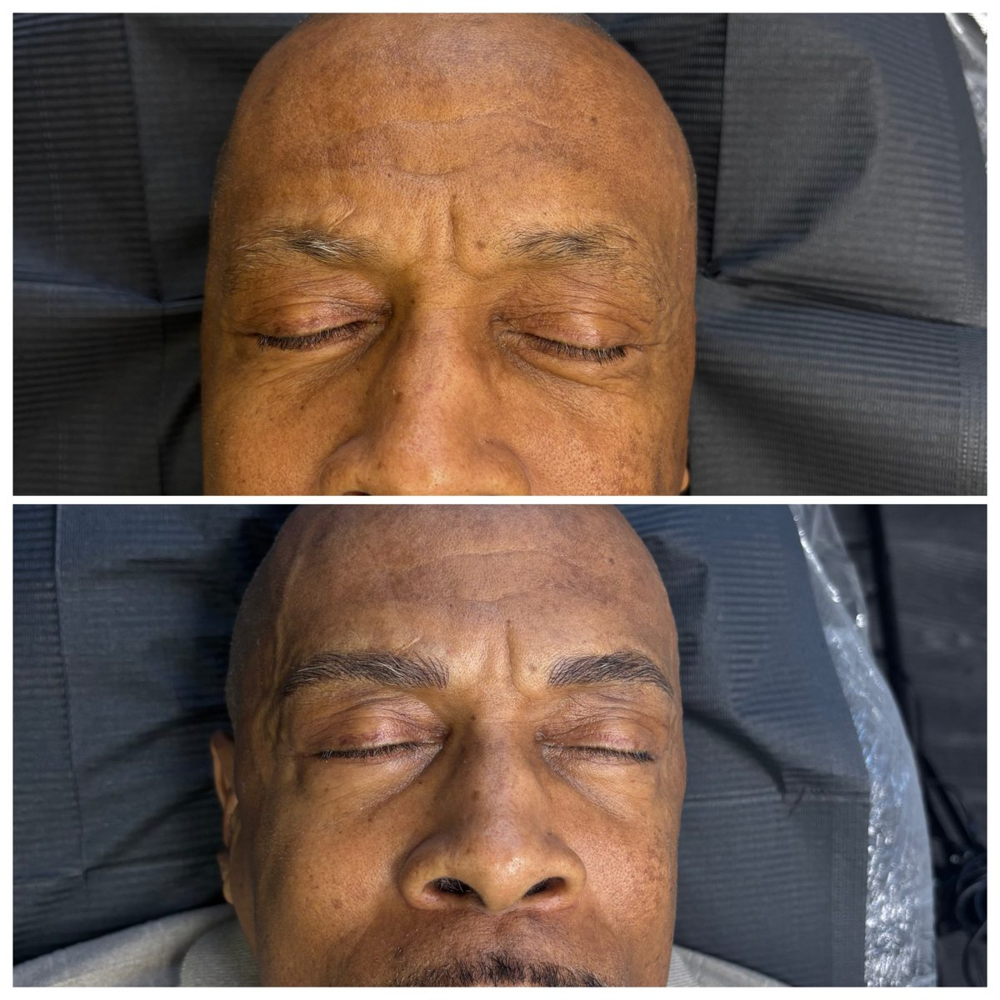

Wilmington, Delaware
Lashes mapped to your eyes.
Kelsey Tyre is a licensed esthetician and lash artist with K.A.T Eyes. She works out of the Delaware SMP studio at Heritage Plaza, where every set starts with a look at your eye shape, not a template.


Services
What you can book with Kelsey

Full set of extensions
Individual lashes placed on your natural lashes, from a soft natural look to full and dramatic.

Lash fills
Your natural lashes shed every day. A fill every two to three weeks keeps your set looking full.

Lash lift and tint
Curl and darken your own lashes. No extensions, no fills, and it grows out naturally.

Brows and microblading
Hair-like strokes for fuller brows. Learn about microblading.
The lash guide
Which look fits your eyes?
The same set can look great on one person and heavy on the next. This is the quick version of how Kelsey thinks about your eye shape.
Almond
Balanced and easy to work with. Most maps suit you, including a full doll eye.
Try: doll or open eyeRound
Longer lengths at the outer corner stretch the eye and add a little lift.
Try: cat eyeHooded
A stronger curl lifts the lashes above the lid fold so they actually show.
Try: open eye, lifted curlMonolid
The right curl is everything here. It keeps lashes visible instead of pressing into the lid.
Try: open eye, tighter curlDownturned
Pulling the longest lengths up and out at the corner lifts the whole eye.
Try: cat eye
Meet your artist
Kelsey Tyre, K.A.T Eyes
Kelsey is a licensed esthetician who does lashes, brows and permanent makeup, and she is trained in scalp micropigmentation too. She runs K.A.T Eyes LLC out of the Delaware SMP studio in Wilmington.
Her approach is simple. Find out how you live, look at your eyes, then build a set you will actually love wearing every day.
- Licensed esthetician
- Lash artist
- Brow and PMU artist
- SMP trained


Brows from our studio
Lashes are only half the frame. These brows were done at the Delaware SMP studio. Real clients, no stock photos in this section.


Fresh from Kelsey's chair
Real sets, real clients, posted by Kelsey. Follow @kat.eyes.bykels for her newest work.
Free consultation
Book your free consultation
Send this and Kelsey will reach out to set up a time. Prefer to talk now? Call or text Kelsey at 302-530-0442.
Our home studio
Find us inside Delaware SMP
Delaware Eyelash is Kelsey's lash studio inside Delaware SMP, Delaware's scalp micropigmentation clinic at Heritage Plaza in Wilmington. Same building, same easy parking, and a few more services if you or someone you love needs them.
- Lash and brow services with Kelsey Tyre of K.A.T Eyes
- Scalp micropigmentation for women with thinning hair
- Scalp micropigmentation for men with hair loss or scars
Delaware SMP
Heritage Plaza
2601 Annand Drive, Unit 16
Wilmington, DE 19808
Kelsey (call or text): 302-530-0442
Delaware SMP studio: 302-292-0380
Kelsey on Instagram: @kat.eyes.bykels